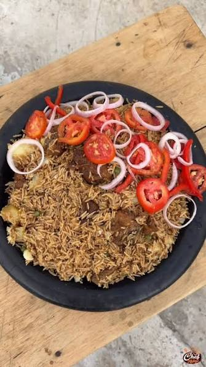

Pilau

Pilau is a spiced rice dish served at weddings, Eid celebrations, and large family gatherings along the Swahili coast. Its roots trace back centuries to the Indian Ocean trade, when merchants from India, Persia, and Arabia brought spices like cardamom, cloves, and cinnamon to East African ports such as Zanzibar and Bagamoyo.
Over time, Tanzanian cooks made the dish their own, frying the onions until very dark to give the rice its deep brown colour and rich, slightly sweet flavour. A pot of pilau is often cooked in large quantities to feed many guests, and the smell of the spices filling a house is closely tied to celebration. It is almost always served with kachumbari, a fresh tomato and onion salad that balances the warmth of the rice.
Ingridients
- 2 cups basmati rice
- 500g beef or chicken, cut into pieces
- 500g beef or chicken, cut into pieces